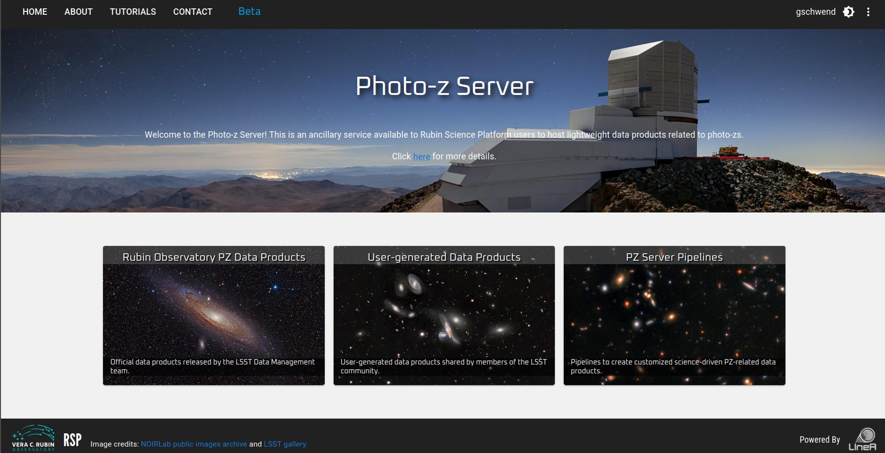
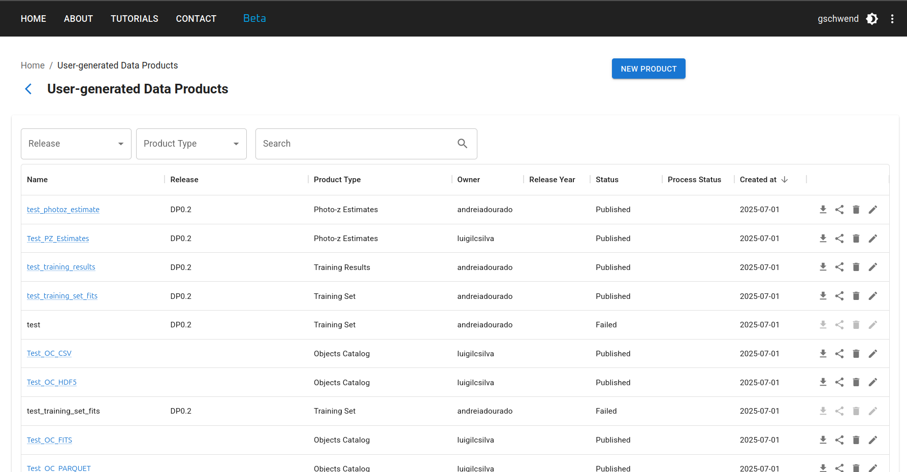
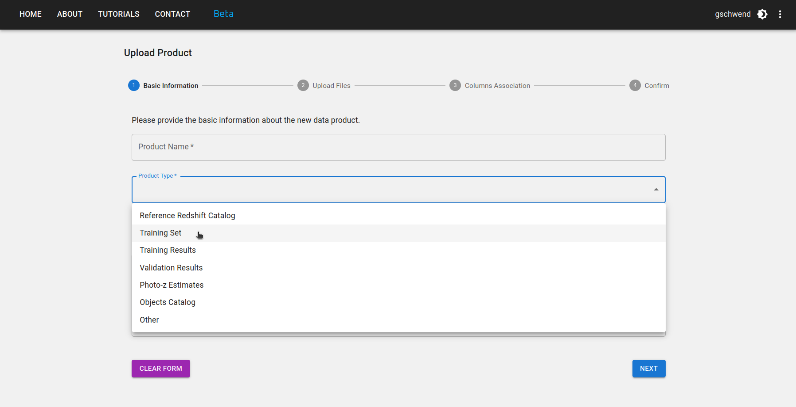
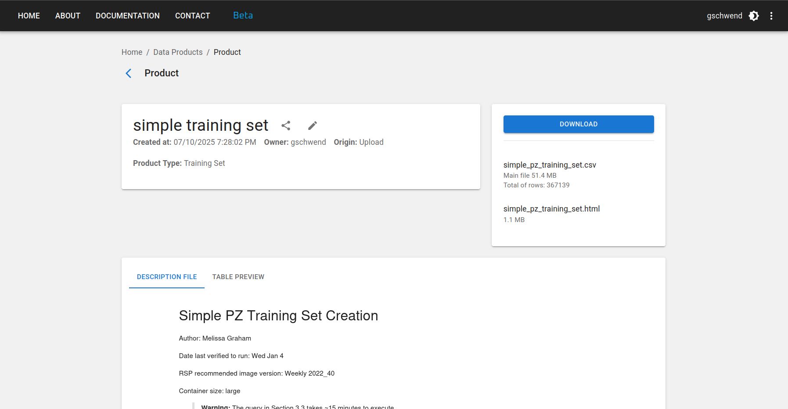
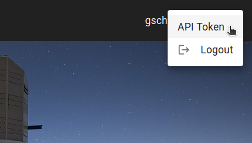
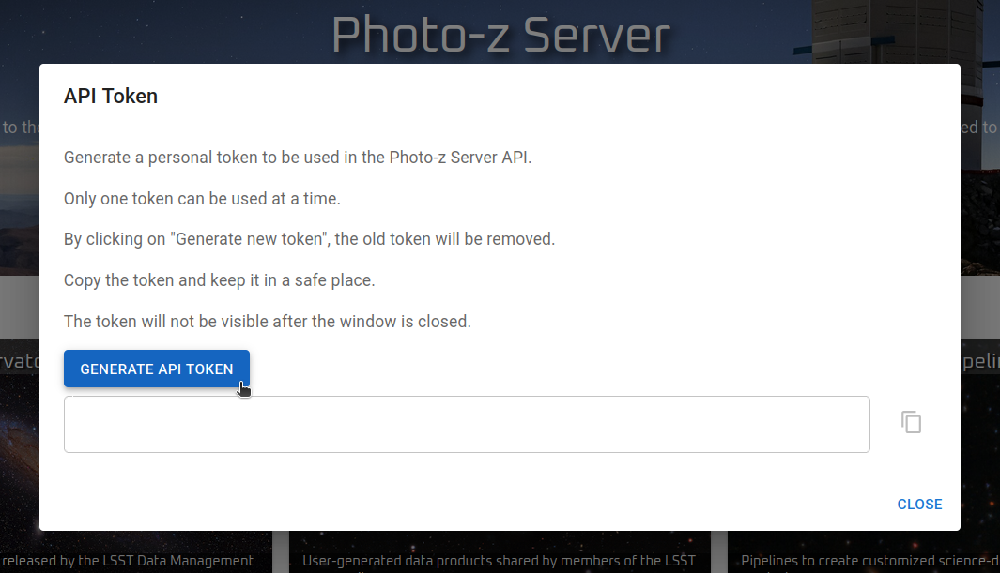

LSST Photo-z Server
Introduction¶
Inspired by the DES Science Portal (Gschwend et al., 2018; Fausti Neto et al., 2018), the Photo-z Server is an online service complementary to the Rubin Science Platform (RSP) to host and produce photo-z-related lightweight data products and to offer data management tools that allow sharing data products among RSP users, attach and share relevant metadata, and help on provenance tracking.
The service is hosted at the Brazilian Independent Data Access Center (IDAC) and is open to the whole LSST Community without geographic constraints. It is designed to be as broad and generic as possible to be helpful for all LSST Science Collaborations working with photo-z data products. As required by the LSST in-kind program, the source code will be publicly available on GitHub.
The Photo-z Server was designed to help RSP users participate in the Photo-z (PZ) Validation Cooperative. This DM team initiative will occur during the LSST commissioning phase (see technical note dmtn-049 for details). The PZ Coordination Group will receive "admin" user credentials with special permissions to add data products tagged as "official data products".
During the PZ Validation Cooperative, the PZ Coordination Group can use the Photo-z Server to host and distribute standardized training and validation sets for algorithm performance comparison experiments and to collect the results from different users. Nonetheless, the Photo-z Server will continue serving the LSST Community in subsequent years. Beyond the PZ Validation Cooperative, RSP users can use the Photo-z Server to easily keep track of and share lightweight files containing various test results.
Getting started¶
Photo-z Server website¶
The main user interface of the Photo-z Server website is its website at pzserver.linea.org.br.

The three cards on the landing page lead to the list of data products (left and center) or to the Photo-z Server pipelines (right).
On the data products list page, users can browse, search and filter the products uploaded by users or created with the Photo-z Server pipeline. The data products uploaded on the PZ Server becomes automatically visible, downloadable and shareable to all registered users.

Data product types¶
The photo-z-related products are organized into four categories (product types):
- Reference Redshift Catalog: Catalog of reference redshifts and positions of galaxies (usually spectroscopic redshifts and equatorial coordinates).
- Training Set: Training set for photo-z algorithms (tabular data). It usually contains magnitudes, errors, and reference redshifts.
- Training Results: Results of a photo-z training procedure (free format). Usually a pickle file created by RAIL Inform submodule.
- Validation Results: Results of a photo-z validation procedure (free format). Usually contains photo-z estimates (single estimates and/or pdf) of a validation set, photo-z validation metrics, validation plots, etc.
- Photo-z Estimates: Results of a photo-z estimation procedure (usually the output of RAIL Estimate module). If the data is larger than the file upload limit (200MB), the product entry stores only the metadata (instructions on accessing the data should be provided in the description field.
Upload a new data product¶
To upload a new data product, click the button NEW PRODUCT on the top right of the User-generated Data Products page and fill in the Upload Form with relevant metadata. Description and auxiliary files are optional and can be modified later.

Depending on the data product type, if the data is tabular, the upload tool might require specific file formats. The formats currently supported are: CSV, FITS, HDF5, and Parquet1.
Share data products¶
Each data product has a unique name, hereafter called "internal_name" automatically composed by the system as a unique id number plus the name chosen by the user with spaces replaced by underlines. This name is the URL address of the data product's details page on the PZ Server website (pzserver.linea.org.br/product/internal_name) and is the key to access the data using the Photo-z Server Python API (see details below). The easiest way to share a data product is by providing the product's internal_name or URL, which leads to the product's download page.
Download a data product¶
On the details page, some relevant metadata is displayed together with a table preview (when tabular data) and the rendered HTML auxiliary file, when available.

The download button triggers the download of a compressed .zip file with all the contents of the data product, including auxiliary description files.
Photo-z Server API¶
The Photo-z Server also offers an API as a Python package to facilitate the command-line access of data and metadata. The API contains functions to explore the data products available, retrieve the contents of a given data product to work on memory or download the files of interest.
The Python package pzserver is open source available on GitHub and is installable via pip with:
pip install pzserver
Tutorial notebook¶
A tutorial notebook with examples for all pzserver methods is available on the pzserver library's repository on GitHub. There is also the Photo-z Server API documentation page with further details targeted for developers.
Access token¶
Once installed and imported in a Python environment, the PzServer class opens the remote connection to the PZ Server database.
from pzserver import PzServer
pz_server = PzServer(token="<paste your access token here>")
An access token is required for authentication. The token can be generated by users on the PZ Server website (top right corner menu on the home page).


Basic commands¶
Basic commands to display data and metadata in a Jupyter notebook cell (if not in a Jupyter notebook, replace display for get to return the results as Python dictionaries):
pz_server.display_product_types()
pz_server.display_releases()
pz_server.display_products_list()
pz_server.display_products_list(filters={"release": "DP1", "product_type": "Training Set"})
search_results = pz_server.get_products_list(filters={"product_type": "training results"})
pz_server.display_product_metadata(<product_id>)
Basic commands to download or retrieve data to memory:
pz_server.download_product(<product_id>, save_in=".")
training_set = pz_server.get_product(<training_set_id>)
training_set.display_metadata()
Please see the tutorial notebook for the complete list of examples, including methods for specific product types, instructions to upload and modify data products via the pzserver library.
-
Get in touch with the development team if your science case requires a different file format. ↩